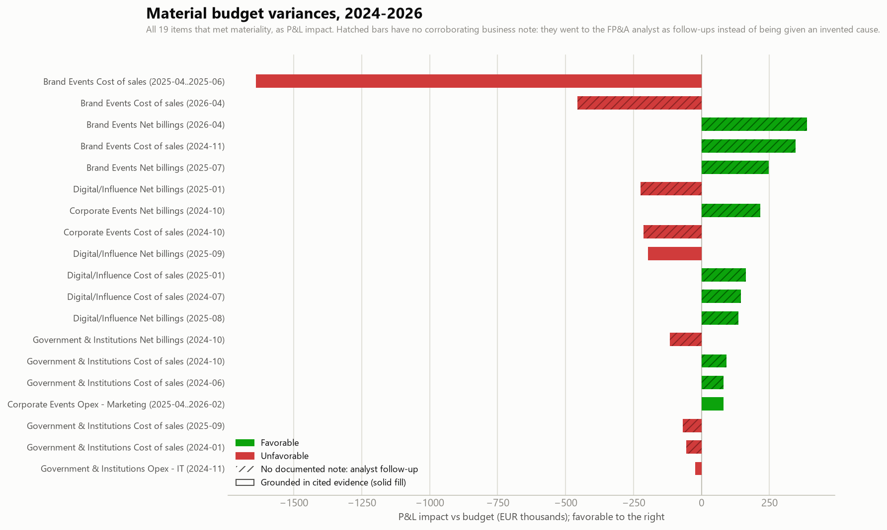

Generated by agents/variance_agent.py from data/eventco_monthly_cleaned.csv (the Data Ingestion Agent's output) and the internal business notes log data/business_notes.csv. This agent never reads data/ground_truth.md.
Variance = actual − budget, computed for every line item, BU and month (44 BU/line series across 30 months; full grain in output/variance_table.csv). Direction is F (favorable) or U (unfavorable): revenue above budget is favorable, cost above budget is unfavorable.
Materiality:
Root-cause discipline: this agent never invents a cause. Every material row carries exactly one of three explanation types, and the type is always visible:
data/analyst_commentary.csv after investigating with the business. Labeled as manual input so it can never be mistaken for machine-found evidence.Same magnitude rule as the ingestion agent (actual >4x or <0.25x budget is not a plausible business event). These rows are withheld from variance analysis and materiality testing entirely, pending correction at source. Explaining them as business variances would be inventing a story about a typo.
| Business Unit | Line item | Month | Actual | Budget |
|---|---|---|---|---|
| Brand Events | Net billings | 2025-11 | EUR52,243,584 | EUR5,238,445 |

Sorted by absolute EUR impact. Period spans of more than one month are sustained episodes; Actual/Budget/Variance are cumulative over the period. Evidence cites note IDs from data/business_notes.csv.
Corroborated by the business notes log: N11 (2025-04-14, Brand Events, Project Director): "Falcon product-launch event (Riyadh): client requested a major on-site scope expansion during build week. Overtime crews, additional staging and expedited freight all booked at premium rates. Expect a production cost overrun through the end of Q2 while the change-order negotiation with the client is still open." / N13 (2025-06-30, Brand Events, BU Controller): "Q2 close: Falcon launch cost overrun confirmed at roughly EUR1.6m above plan across April-June, concentrated in external production costs. Change order signed for partial recovery only; margin impact flagged to group controlling."
Evidence: N11, N13
Analyst input (FP&A Analyst, 2026-05-12): "An unplanned client project was won in late March and delivered inside April; external production was booked at short-notice premium rates. Together with the matching revenue line the net margin impact is slightly negative. Change-order discipline flagged to the project director." Written manually after follow-up; not derived from the business notes log.
Analyst input (FP&A Analyst, 2026-05-12): "Unbudgeted revenue from the same late-won April project; see the matching COGS variance. Recognized on delivery." Written manually after follow-up; not derived from the business notes log.
Analyst input (FP&A Analyst, 2024-12-10): "November events were delivered with in-house crew and staging stock instead of the subcontracting assumed in budget; Q4 freight was also renegotiated. Genuine savings, not a timing shift." Written manually after follow-up; not derived from the business notes log.
Analyst input (FP&A Analyst, 2025-08-11): "A client brought part of its September roadshow forward into July. Timing between months rather than new business; the September shortfall stayed within tolerance." Written manually after follow-up; not derived from the business notes log.
Analyst input (FP&A Analyst, 2025-02-10): "Two platform go-lives slipped from January into February on client-side content delays. Revenue is recognized on delivery, so January carries the gap; both projects were invoiced in February." Written manually after follow-up; not derived from the business notes log.
Analyst input (FP&A Analyst, 2024-11-08): "A brand activation sold for early 2025 was pulled into October at the client's request. The matching cost variance appears on the COGS line the same month." Written manually after follow-up; not derived from the business notes log.
Analyst input (FP&A Analyst, 2024-11-08): "Production costs of the pulled-forward October activation; see the matching revenue variance." Written manually after follow-up; not derived from the business notes log.
Corroborated by the business notes log: N08 (2025-09-26, Digital/Influence, Account Manager): "NovaTech (US client) roadshow is invoiced in USD. The euro strengthened sharply against the dollar this month, so reported revenue on the contract translates materially lower in EUR. No change in delivered scope or client commitment; delivery costs are EUR-denominated and unaffected."
Evidence: N08
Analyst input (FP&A Analyst, 2025-02-10): "External development spend paused over the year-end delivery freeze and resumed in February, alongside the two go-lives that slipped on the revenue line. This recurs every holiday season; budget phasing to be corrected in the next cycle." Written manually after follow-up; not derived from the business notes log.
Analyst input (FP&A Analyst, 2024-08-09): "Contractor spend deferred during the summer staffing gap on the delivery bench; caught up from September." Written manually after follow-up; not derived from the business notes log.
No clear driver identified: no corroborating note found in the business log for this BU, line item and period, and the analyst has not yet returned commentary from follow-up. The variance is numerically material but unexplained. Recommend follow-up with the BU controller rather than attributing a cause.
Analyst input (FP&A Analyst, 2024-11-08): "Two institutional clients pushed their October milestone invoicing into November after a budget-cycle approval delay on their side. Timing only." Written manually after follow-up; not derived from the business notes log.
Analyst input (FP&A Analyst, 2024-11-08): "Delivery costs of the two milestones that slipped into November were held back with them; see the matching revenue variance. Timing only." Written manually after follow-up; not derived from the business notes log.
Analyst input (FP&A Analyst, 2024-07-09): "The June conference was held in a client-owned venue instead of the hired venue assumed in budget; venue and catering pass-through came in under plan. A saving, not timing." Written manually after follow-up; not derived from the business notes log.
Corroborated by the business notes log: N12 (2025-06-25, Corporate Events, Practice Lead): "Media buying and content creation move in-house from 1 July; both external agency retainers terminated end of June. Marketing spend expected to run 20-30% under budget for the rest of the year." / N16 (2025-09-15, Corporate Events, BU Controller): "In-housing of media buying is tracking ahead of plan - marketing spend well under budget again this month, and the underspend should persist through year-end."
Evidence: N12, N16
No clear driver identified: no corroborating note found in the business log for this BU, line item and period, and the analyst has not yet returned commentary from follow-up. The variance is numerically material but unexplained. Recommend follow-up with the BU controller rather than attributing a cause.
Analyst input (FP&A Analyst, 2024-02-09): "January carried final supplier invoices for a December 2023 conference that arrived after the prior-year cut-off. Timing across the year-end, no change to the full-year run-rate." Written manually after follow-up; not derived from the business notes log.
Corroborated by the business notes log: N06 (2024-11-08, Government & Institutions, AV & Systems Manager): "On-site registration and AV control systems failed during a ministry summit engagement on 4 November; emergency replacement hardware and expedited vendor licenses procured outside the normal purchasing cycle. One-off cost; insurance claim filed with the provider."
Evidence: N06
All other BU/line/month combinations are within materiality tolerance and are not individually commented; the full variance grain is in output/variance_table.csv.